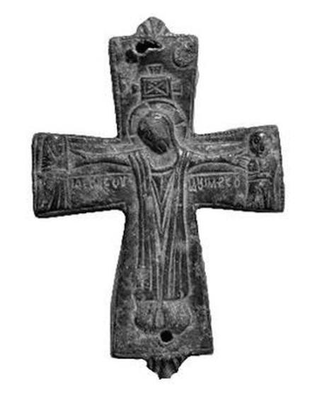

Catalog › CE-0308 · BAL2023-6
Valvă izolată de bronz, cat. 6, Muzeul Kuva-yi Milliye Balıkesir
sec. X–XI (901–1100) · loc necunoscut · Muzeul Kuva-yi Milliye din Balıkesir (Balıkesir Kuva-yi Milliye Müzesi), Turcia, inv. Müze En. No 2001/381
single valve of a reliquary cross, bronz; c. X–XI (901–1100); find spot unknown; kept at Muzeul Kuva-yi Milliye din Balıkesir (Balıkesir Kuva-yi Milliye Müzesi), Turcia.


Identificare
- Categorie
- Valvă izolată
- Material
- Bronz
- Tehnică
- Turnare în relief
- Stare
- Corodată
- Dimensiuni
- Î 81 × L 55 mm
Iconografie
- Avers
- Răstignirea (Hristos în colobium); Sf. Ioan
- Descriere avers
- Hristos răstignit, bărbos, în colobium, cu capul cu nimb; deasupra capului partea de sus a crucii, iar deasupra ei, pe placa orizontală, un semn asemănător cu X; deasupra capului soarele și luna; brațele întinse, capul ușor aplecat spre brațul drept; la capetele brațelor, la dreapta Maica Domnului, la stânga Ioan (în sursă „Vaftizitorul”, iar în clasificare „Evanghelistul”); în golurile de sub brațe inscripțiile ‘Ιδετ ον σον’ și ‘η μετηρσον’ (așa în sursă).
- Inscripții
- Ιδετ ον σον [ἴδε ὁ υἱός σου]; η μετηρσον [ἡ μήτηρ σου]
- Limba
- Greacă
Datare și atribuire
- Datare
- sec. X–XI (901–1100)
- Centru
- Necunoscut
- Tipologie
- Pitarakis 2006, forma tip I; Sıddıki 2023: Răstignirea tip III
Descoperire
- Context
- Colecție (fără context)
- Coordonate
- 39.6484° N, 27.8826° E
- Precizia locului
- Loc de păstrare (loc de descoperire incert)
Păstrare și referințe
- Colecție
- Muzeul Kuva-yi Milliye din Balıkesir (Balıkesir Kuva-yi Milliye Müzesi), Turcia
- Nr. inventar
- Müze En. No 2001/381
- Bibliografie
- F. İ. Sıddıki, Balıkesir Kuva-yi Milliye Müzesi Koleksiyonundaki Bizans Dönemi Bronz Röliker Haçlar, „Art-Sanat”, 20, 2023, p. 561–588 [Sıddıki 2023], p. 577, cat. nr. 6, reprodusă la G. 11–12 (p. 577). DOI: 10.26650/artsanat.2023.20.1290116. Acces liber (CC BY-NC 4.0).
- Figura
- G. 11 (fotografie), G. 12 (desen)
- Planșe
- Sıddıki 2023, p. 577
- Analogii
- İstanbul, Muzeul de Arheologie 5696 (Pitarakis 2006, p. 189, cat. 2; sec. IX); Efes 1/32/90 (Pülz 2020, p. 91, cat. 31, pl. 33, fig. 117; sec. X–XI); Amorium, mormânt (Yaman 2012, p. 339, fig. 8); Vatican, Biblioteca Apostolică 1102 (Pitarakis 2006, p. 189, cat. 1); British Museum 1982/2-2/1 (Pitarakis 2006, p. 190, cat. 5; sec. IX); Atena, Muzeul Bizantin T215-B1559 (Tsaklos 2002, p. 189, cat. 211; sec. IX–X) și T.250/XAE 500 (Pitarakis 2006, p. 208, cat. 67; sec. X–XI)
- Observații
- Datare după Sıddıki: sec. X–XI. Intrată în muzeu prin achiziție, 22.01.1997; locul descoperirii nu se cunoaște (piesele au fost cumpărate din Balıkesir și împrejurimi). Dimensiuni date în sursă (cm): înălțime 8.1, lățime 5.5, grosime 6 (aparent greșit). Un singur capac păstrat; celălalt lipsește, iar balamalele sunt rupte. Piesa e în general „sănătoasă”, ușor corodată. Sursa dă grosimea „K: 6 cm” (evident greșit). Pe brațul de sus există o gaură făcută ulterior, pentru montare. În evaluarea finală autorul propune datarea sec. IX–XI. Locul descoperirii nu e cunoscut cu precizie; punctul de pe hartă marchează locul de păstrare (Muzeul Kuva-yi Milliye din Balıkesir), nu locul descoperirii. Coordonate: nu sunt date în sursă.
Citare: Corpus Encolpiorum, CE-0308, Valvă izolată de bronz, cat. 6, Muzeul Kuva-yi Milliye Balıkesir, --root/piese/BAL2023-6/ (accesat 2026-10-17).